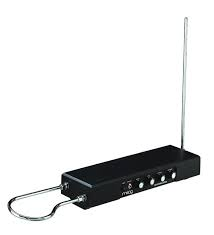
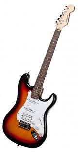
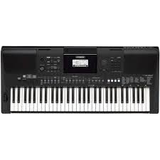
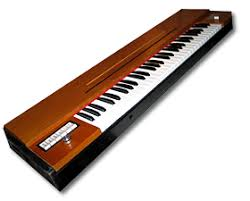
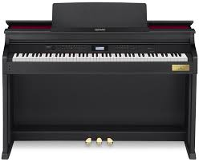
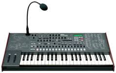

Електромузичні інструменти
Електромузичні інструменти (електрофони) — група музичних інструментів, в яких звук видобувається за допомогою електричних коливань.
В залежності від способу формування цих коливань розрізняють:
Електричні музичні інструменти (електромеханічні) — в яких акустичні коливання (напр. струни) підсилюються і обробляються за допомогою електронної апаратури.
- Електронні музичні інструменти — у яких коливання електричного струму здійснюється виключно електрогенераторами.
В загальному випадку електромузичний інструмент складається з наступних елементів:
- генератор електричних коливань (OSC)
- пристрої, що дозволяють грати на інструменті, наприклад клавіатура
- пристрої, що дозволяють корегувати тембр звуку
- підсилювач, що підсилює електричні коливання
- гучномовець, що перетворює електричні коливання в акустичні.
Історичні етапи розвитку електромузичних інструментів
Найпершим електромузичним (електромеханічним) інструментом вважається Музичний телеграф, сконструйований в 1876 році американським телеграфістом Еліша Греєм.
Першим цілковито електромузичним інструментом став телармоніум, запатентований Таддеусом Кахіллом в 1897 і сконструйований в 1906. апарат важив 200 тонн, мав довжину близько 19 метрів, містив 145 спеціальних електрогенераторів. Інструмент проіснував до 1916. Записів не зберіглося.
В 1920 російський винахідник Лев Термен сконструйовав Терменвокс. Головною частиною терменвокса є два високочастотних коливних контури, настроєні на спільну частоту. Електричні коливання звукових частот створюються генератором на електронних лампах, сигнал пропускається через підсилювач і перетворюється гучномовцем в звук. Висота і гучність звуку залежала від магнітного поля навколо антен.
В 1928 Морісом Мартено сконструював інструмент — Хвилі Мартено, який мав клавіатуру та кілька допоміжних контролерів. Цей інструмент використовувався О. Мессіаном в симфонії «Турангаліла» та інших творах.
1935 року побачив світ орган Хаммонда. Призначений спочатку для церковних цілей, як дешевший аналог духових органів, цей інструмент отримав широке застосування не тільки в духовній музиці, але й, починаючи з 1960-х років у рок- та поп-музиці.
1952 року сконструйовані перші електрогітари та бас-гітари, що згодом стали знаковими інструментами рок-музики
У 1960-х роках в СРСР був розроблений синтезатор АНС, що працював на основі фотооптичного синтезу звуку. В ці ж роки під керівництвом Я.Ксенакіса розроблений музичний комп'ютер UPIC
1963 року сконструйовано мелотрон, попередник сучасних семплерів.
1964 року сконструйовано синтезатор Муґа
У 1970-х роках завоювали популярність клавішні електромеханічні інструменти — клавінет та електропіаніно, а також такий інструмент, як вокодер.
1978 року розроблена технологія таблично-хвильового синтезу (Wavetable), що невдовзі знайшла у використання у синтезаторах фірм Yamaha, Korg та інших
1983 року розроблено стандарт MIDI, що дав початок створення MIDI-сумісних інструментів
У 1990-ті роках з'являється програмне забезпечення для синтезу звуку, зокрема у 1996 році розроблено стандарт VST-інструментів.
|  | Терменвокс (дослівно — голос Термена) або просто термен — електронний музичний інструмент, на якому грають не торкаючись його поверхні. Це уможливлюють дві антени, що отримують інформацію про розміщення рук терменіста. Одна з антен керує коливаннями (частотою звуку), інша — амплітудою (гучність інструмента). Отримані електричні сигнали з терменвоксу подаються на динамік через підсилювач. Інструмент винайшов російський винахідник Лев Термен у 1919 році (запатентував у 1928). Терменвокс можна почути в академічній, джазовій, експериментальній та кіномузиці. Серед сучасних виконавців на терменвоксі — Наталія Термен, Петро Термен, Олеся Ростовська (Росія), Кароліна Айк (Німеччина), Торвальд Йоргенсен (Голландія), Чарлі Драпер, Лідія Кавіна (Велика Британія), Доріт Крайслер, Роб Швіммер (США) Є всього дві школи терменвокса у світі - Японська школа терменвокса, під керівництвом Масами Такеучі і Московська школа терменвокса під керівництвом Петра Термена |
|---|---|
|  | Електрогітара — електричний музичний інструмент, різновид гітари з електричними звукознімачами, що перетворюють коливання металевих струн на коливання електричного струму. Сигнал зі звукознімачів може бути оброблений для отримання різних звукових ефектів та підсилений для відтворення через динаміки. Слово «електрогітара» виникло від словосполучення «електрична гітара». |
|  | Синтезатор — електронний пристрій, який синтезує звук за допомогою одного чи кількох електричних генераторів коливань. Необхідне звучання досягається регулюванням властивостей електричного сигналу (в аналогових синтезаторах), або параметрів центрального процесора (у цифрових синтезаторах). Остаточно електричні коливання перетворюються у звук через гучномовці (або, при потребі, навушники). Синтезаторами називають як окремі пристрої, що є основою електронних музичних інструментів, так і властиво електронні музичні інструменти. Синтезатор, виконаний у вигляді корпуса із клавіатурою, називається клавішним синтезатором. Синтезатор, виконаний у вигляді корпуса без клавіатури, називається звуковим модулем і управляється від зовнішніх MIDI-пристроїв (MIDI-клавіатури, секвенсера, або іншого синтезатора). Клавішний синтезатор, облаштований вбудованим секвенсером, називають робочою станцією. |
|  | Клавінет (англ. Clavinet) — електромузичний інструмент, що був розроблений компанією Hohner і увійшов у музичну практику в 1970-ті роки. За своєю конструкцією клавінет являє собою електрифікований клавікорд — інструмент має клавіатуру по типу фортепіанної, натискання клавіш призводить до ударів молоточків по струнах, у безпосередній близькості до яких знаходяться електронні датчики, які індукують коливання металевих струн в електричний струм, що передається до підсилювача й обробляється — приблизно за тим же принципом, як і в електрогітарі. |
|  | Електропіаніно, або електричне піаніно - клавішний електричний інструмент, що з'явився у 1960-х роках і набув особливої популярності в 1970-х. Електропіаніно не слід плутати з електронними піаніно, що являють собою електронні музичні інструменти. |
|  | Вокодер (англ. vocoder) — інструмент, призначений для аналізу та синтезу звуків та мовлення. Початково був винайдений як кодифікатор мови для телекомунікацій в 1930-х роках. Вокодер призначався для забезпечення надійного радіозв'язку — голос оцифровувався, кодувався і передавався вузькосмуговим голосовим каналом. Винахідником вокодера вважається американський інженер Гомер Дадлі (Homer Dudley), який запатентував свій винахід у 1935 році. |